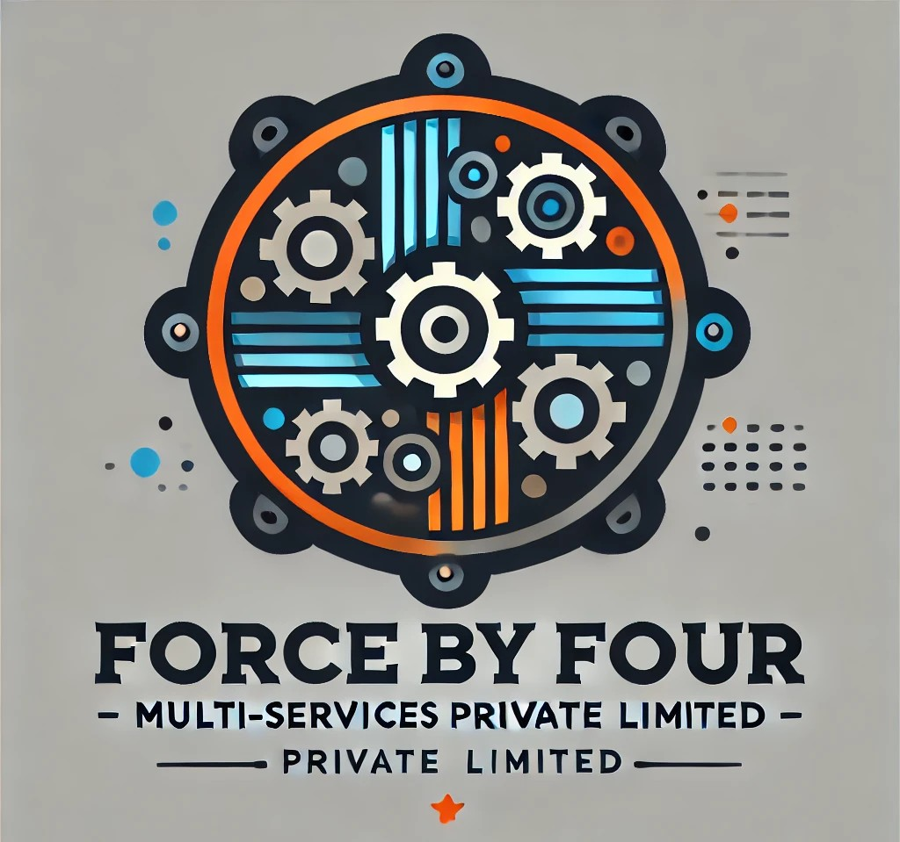

My industry experiences range from artificial intelligence and machine learning to software
engineering to cloud engineering through professional work and internships. I also have
experience in both Research & Development and Software Development.
Project Intern - Software Engineer at Bharat Forge (KCTI)
July 2024 - Present
As a Project Intern and Software Engineer for 11 months during my Master of Technology
program, I contributed to the
development of an Autonomous Underwater Vehicle (AUV). My responsibilities included
software design, mission planning, and implementing systems for navigation, obstacle
avoidance, and sensor integration.
This project provided hands-on
experience in advanced software engineering and autonomous systems development..
Learn more about Bharat Forge
Software Engineer Intern at Ei System
Dec 2023 - Feb 2024
Completed a 3-month remote internship as a Software Engineer Intern at Ei System.
Gained hands-on experience in
developing and deploying web applications, working with both front-end and back-end
technologies. Contributed to
designing user interfaces, building RESTful APIs, and integrating databases, while
collaborating with a distributed team
to deliver scalable solutions.
Learn more about Ei System
Project Intern - Software Engineer At Green Zone Multi-Services Pvt. ltd
Dec 2022 - May 2023
During my final semester, I worked as a Project Intern at Green Zone Multi-Services
Private Limited for six months as a
Software Engineer Intern. My primary focus was on the development of an Image Forgery
Detection project, where I
implemented techniques to identify and prevent image manipulation. This role allowed me
to gain valuable experience in
image processing, machine learning, and developing robust solutions for digital
forensics.
Learn more about the
Green Zone Multi-Services Pvt. Ltd

Front End Developer At Force by Four Multi-Services Pvt. ltd
January 2022 - February 2022
During my college years, I worked as a Front-End Developer Intern for two months at Force
By Four Multiservice Private
Limited. I contributed to the development of a Hotel Management System, focusing on
creating responsive and intuitive
user interfaces. This experience allowed me to strengthen my skills in front-end
development and apply modern web
technologies to real-world projects.
Learn more about Force by Four Multi-Services Pvt. ltd